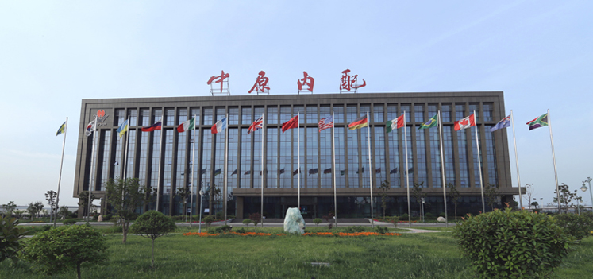

中原内配是全球先进的动力活塞组件系统供应商和端对端供应链管理服务商，主营产品气缸套产销量位居行业前列，为全球乘用车、商用车、工程机械、农业机械、船舶工业等动力领域提供绿色、环保、节能气缸套及摩擦副的全套解决方案。
中原内配于2010年7月在深交所上市，股票代码002448。2013年，中原内配集团正式组建。集团业务范围覆盖先进内燃机零部件制造技术、5G融合、智能驾驶、智能制造、硬质合金及磨料磨具、汽车电子、激光工程、金融服务等领域，目前拥有27家子公司，其中10家生产型子公司，在北美、欧洲设立2家海外子公司。主营产品有：气缸套系列、活塞系列、活塞环系列、轴瓦系列、硬质合金及磨料磨具系列、汽车电控执行器系列、发动机润滑产品系列、激光设备、智能装备、智能制造系统、智能驾驶辅助系统等。
奋斗新时代，创新赢未来，开放、合作、绿色、共享的中原内配集团欢迎您！